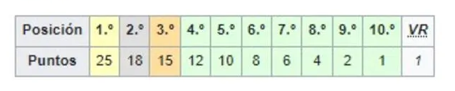
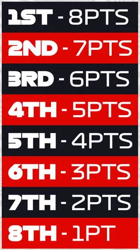
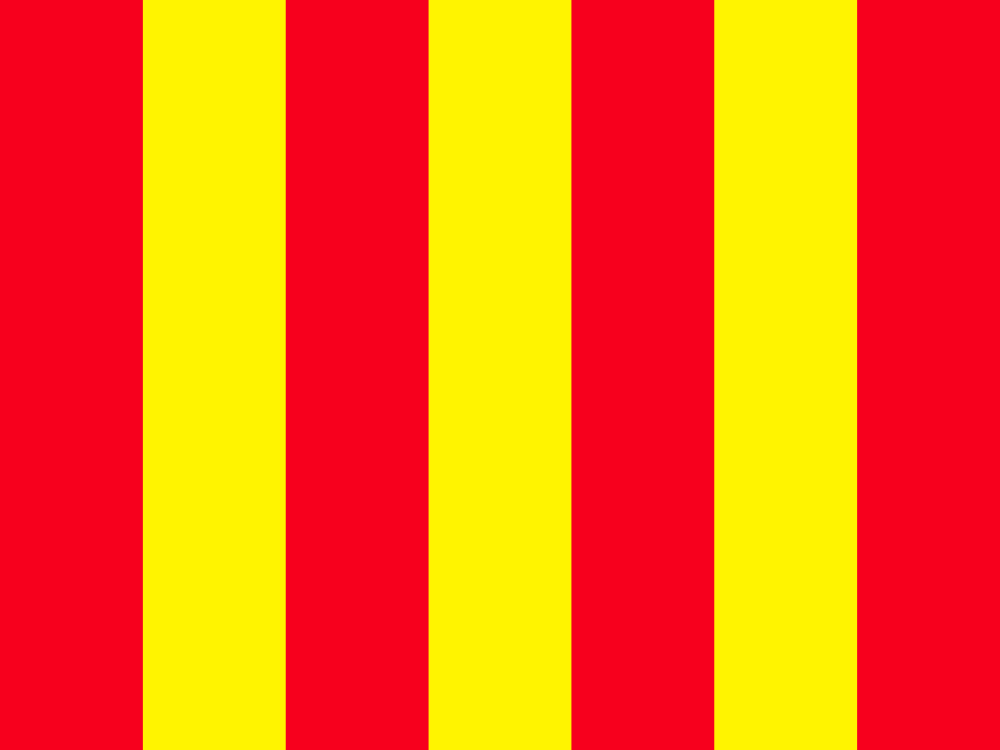
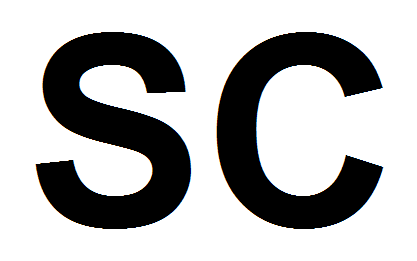
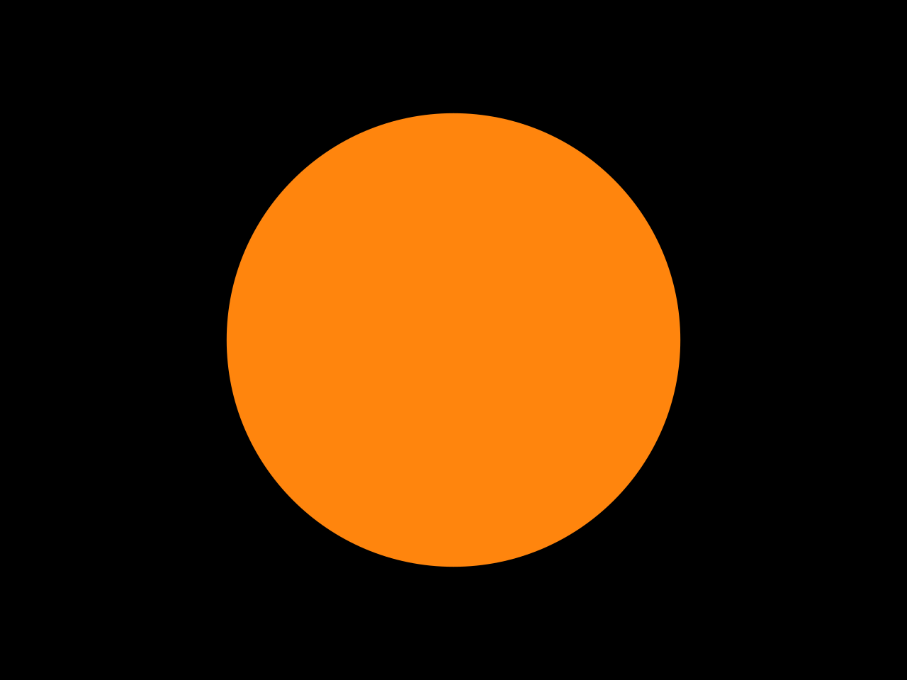
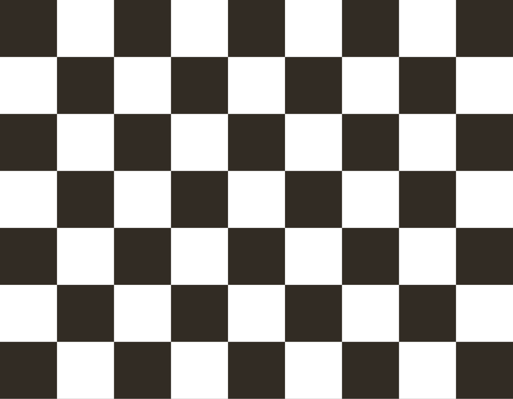

Reglamentación actual
El reglamento de la Fórmula 1, elaborado por la Federación Internacional del Automóvil (FIA), está
dividido en dos partes principales.
Una de ellas se refiere a las condiciones técnicas de los monoplazas y la otra se centra en las
condiciones en que se deben desarrollar los eventos, así como las reglas de puntuación y de
penalización.
Regulaciones Deportivas
Los Grandes Premios (GP)
La competición se celebra en fin de semana y duran tres días. El viernes con dos sesiones de
entrenamientos libres, donde los pilotos prueban y adaptan su coche al circuito, tanto a nivel
de reglajes como de neumáticos.
El sábado se realiza otra sesión de entrenamientos, y a continuación, se realiza la
clasificación.
El domingo se corre la carrera. Los monoplazas se colocan en la parrilla de salida treinta
minutos antes de la hora estándar estipulada del comienzo del Gran Premio
Los entrenamientos libres.
Los equipos y pilotos usan los entrenamientos libres para adaptar el setup del coche con
programas para mejorar el rendimiento en la clasificación y la carrera, y que los pilotos rueden
y prueben configuraciones para que mejoren sus tiempos en pista. Cada una de las sesiones duran
una hora.
Los libres 1 y 2 se celebran el viernes, y los libres 3, el sábado. Dos horas y media después
del término de los libres 3 comienza la clasificación.
La clasificación
Desde 2006 se instauró el sistema de tres sesiones, denominadas Q1, Q2 y Q3, que se mantienen
hasta la actualidad. Este sistema clasificatorio consta de tres partes, que duran 18, 15 y 12
minutos respectivamente.
Los primeros quince pilotos pasarán a la Q2, comenzando el resto la carrera del domingo en los
puestos finales según su clasificación en la Q1. De los participantes en la Q2, solo diez pasan
a la Q3. En la Q3, los mejores diez pilotos lucharán para determinar el orden de salida para el
Gran Premio del domingo.
La primera posición se le conoce como 'Pole Position'. En aquellos GP en los que haya programada
una carrera sprint, se harán dos clasificaciones para determinar la posición de salida en la
carrera oficial y en la sprint, siendo ésta última igual a la convencional con la diferencia de
que las partes se llaman SQ1, SQ2 Y SQ3, durando 12, 10 y 8 minutos respectivamente.
Parc Fermé
Después de pesar los coches en cada sesión de calificación, los equipos están obligados a llevar
sus coches a un sitio determinado del paddock, bajo la tutela de la FIA, conocido como "parque
cerrado" (parc fermé). Los coches permanecen en el parc fermé desde tres horas y media tras la
última sesión de calificación hasta cinco horas antes del comienzo de la carrera. Una vez allí
no se puede trabajar en el coche excepto en tareas rutinarias de mantenimiento.
Si un equipo tiene que hacer otros trabajos importantes, trabajos en el cuerpo del vehículo o
ajustes de suspensión, el coche se iniciará desde la calle de boxes (pit lane).
Carrera Sprint
Desde 2021 en unas pocas carreras seleccionadas, se añade además una sesión sprint el día
anterior a la carrera. Esta sesión sprint consiste en una carrera de un tercio de la distancia
de la carrera principal. La duración de la sesión sprint está limitada a una hora ampliable por
las paradas realizadas hasta una hora y media en total.
Carrera
Los pilotos deben estar en sus coches y en su lugar en la parrilla en el momento que el pit lane
cierra 15 minutos antes de la salida; de lo contrario deben iniciar la carrera desde los boxes.
Mientras tanto, los equipos pueden trabajar en sus coches en la parrilla; a esto se lo conoce
como "vuelta de instalación".
Antes de comenzar la carrera, los pilotos dan la denominada "vuelta de formación" o "vuelta
previa", donde demuestran que el coche puede arrancar por sí mismo y aprovechan para calentar
motores, frenos y neumáticos.
Después de realizar esta vuelta, los vehículos se colocan en la parrilla de salida, en la
posición determinada durante la clasificación.
Cuando ocurre esto, el jefe de carrera activa el procedimiento de inicio de carrera que consiste
en el encendido de 5 luces rojas, en intervalos de un segundo.
Cuando todas las luces están encendidas, se apagan y la carrera se da por iniciada, a partir de
este momento los pilotos pueden empezar a mover sus coches.
La distancia de todas las carreras será igual a la menor cantidad de vueltas completas que
exceda una distancia de 305 km, y no podrá durar más de dos horas.
Los pilotos que crucen la línea de meta tras la última vuelta en las 10 primeras posiciones
serán recompensados con una entrega de puntos. Estos puntos determinarán la posición final del
Campeonato Mundial de Pilotos de Fórmula 1, así como el Campeonato Mundial de Constructores de
Fórmula 1.
Aquellos que queden dentro de los 3 primeros conformarán el podio.
Estrategias
La Fórmula 1 no es solo un deporte en el que se mida la habilidad personal de los pilotos o el
rendimiento de los monoplazas.
También es un deporte de estrategias. Una estrategia acertada puede dar la victoria a un piloto
que a priori no sea favorito o que no haya sido el más rápido durante la carrera.
Básicamente las estrategias tienen que ver con las entradas en boxes.
Es primordial también tomar en cuenta los tiempos de trabajo de los equipos en los boxes durante
la carrera, ya que no todos los equipos trabajan a la misma velocidad.
En varias ocasiones se ha dado la circunstancia de que un piloto puede perder una carrera o una
posición importante en los boxes, por algún error del equipo que le asiste.
Por ello, es vital que los mecánicos de estos equipos practiquen frecuentemente para minimizar
errores y tiempo en las paradas de los vehículos.
Con la reglamentación actual las paradas reducen básicamente a las posibilidades que ofrecen los
neumáticos. Los neumáticos más duros aguantan más, pero también ofrecen menos agarre y por lo
tanto, hacen que los coches sean más lentos.
La clave está en saber encontrar el equilibrio y las paradas justas para que el proceso esté
optimizado y en conjunto se sea lo más rápido posible.
En las carreras con lluvia, la estrategia toma más importancia, ya que es de vital importancia
saber cuando hay que entrar a cambiar los neumáticos de seco a lluvia o viceversa.
Sistema de puntuación
Carrera principal
A partir de la temporada 2010, el sistema permite puntuar a los 10 primeros clasificados en la
carrera principal. Otorga 25 puntos al primer clasificado, 18 al segundo, 15 al tercero, 12 al
cuarto, 10 al quinto, 8 al sexto, 6 al séptimo, 4 al octavo, 2 al noveno y 1 al décimo
clasificado.
Desde 2019 se otorga un punto al piloto de entre los diez primeros clasificados que consiga la
vuelta rápida.

Carrera Sprint
Puntuan desde el primer al octavo clasificado en orden de 8 para el primero y descendiendo un punto por clasificado hasta el octavo.

Sistemas de seguridad y banderas
Las banderas en la Fórmula 1 son imprescindibles son la manera en que los comisarios de pista se comunican con los pilotos.
Los conductores deben de conocer y respetar las distintas banderas, de lo contrario pueden ser personalizados.
Desde el Gran Premio de Gran Bretaña de 2009 se usa regularmente el Sistema de luces de seguridad de la FIA, que supuso un gran avance ya que al piloto le es mucho más fácil ver un aviso en forma de luz que en forma de bandera,
sobre todo en condiciones de mala visibilidad, a este sistema se le añadieron unos LEDs en los volantes de los pilotos de tres colores: amarillo, azul y rojo, que les indican si hay mostrada alguna bandera de dichos colores.
Tipos de banderas
Bandera verde:
Se puede mostrar también durante la vuelta de calentamiento, al principio de una sesión de entrenamientos de forma simultánea en todos los puestos de señalización, cuando se anuncia la largada, previo encendido de los semáforos, o cuando entra el auto de seguridad al garaje.
Bandera amarilla:
Peligro, no se permite el adelantamiento y se debe reducir la velocidad. Se muestran normalmente en el puesto de señalización inmediatamente anterior al peligro, aunque en algunas ocasiones se pueden mostrar en más de un sector.
Puede ser mostrada a los pilotos de dos formas diferentes:
Una bandera amarilla: reducir la velocidad, no adelantar y estar preparados para variar la trazada debido a la presencia de un peligro en un borde de la pista o en una parte de la misma.
Dos banderas amarillas: reducir la velocidad, no adelantar y prepararse para variar la trazada o incluso para detenerse debido a la presencia de un peligro que obstruye la pista total o parcialmente.
Bandera roja:
Detención de los entrenamientos o de la carrera ya sea por un accidente o por causas meteorológicas. Todos los pilotos deben reducir inmediatamente su velocidad, detenerse si es necesario y volver a los boxes. Está prohibido adelantar. Esta bandera se muestra únicamente por orden del director de carrera.
Bandera roja con
franjas amarillas: 
Existencia en la pista de un elemento que causa disminución de la adherencia. Puede mostrarse por restos de aceite o por presencia de fragmentos de coche en pista; también se muestra en aquellas zonas del circuito donde la pista está seca y comienza a llover. Los conductores deberán reducir la velocidad en ese punto.
Bandera amarilla
con siglas vsc o sc: 
Las banderas muestran una bandera amarilla con la sigla SC debajo, o en los paneles led debajo del amarillo la sigla VSC. El coche de seguridad —safety car en inglés— está interviniendo en la pista, por lo hay que reducir la velocidad, no adelantar, e incluso estar preparados para detenerse y variar la trazada ya que un peligro obstruye de forma total o parcial la pista. Si en los paneles aparece VSC, significa coche de seguridad virtual. Los coches tienen que ir a una velocidad reducida y controlada en todo el circuito.
Bandera azul:  Tiene varios significados según cuándo se utilice:
Tiene varios significados según cuándo se utilice:
Siempre se muestra estática al final del pit lane para indicar al piloto que sale del pit lane que hay coches que se aproximan por la pista. El semáforo del pit lane también muestra una señal parpadeante luminosa azul.
En los entrenamientos: el piloto debe ceder el paso a un coche más rápido al cual se precede.
En la carrera: el piloto va a ser superado por otro piloto que ha realizado al menos una vuelta más. El piloto que será superado debe permitir el adelantamiento tan pronto como sea posible.
Bandera negra con
circulo anaranjado: 
Indica al piloto que su vehículo tiene problemas mecánicos que pueden constituir un peligro para los demás competidores y para él, por lo que deberá detenerse en su box lo antes posible. Actualmente no es muy utilizada, puesto que en estas situaciones se le muestran a los pilotos desde las pantallas del auto o se suele avisar al piloto mediante radio.
Bandera blanca
y negra:
Apercibimiento por maniobra peligrosa: El piloto ha realizado una maniobra antideportiva y recibe esta sanción. Se presenta una sola vez y si el competidor reincide en la falta, se le mostrará la bandera negra. Se utiliza también cuando un piloto a excedido los límites de pista 3 veces en carrera, para advertirle que en la siguiente habrá penalización de tiempo.
Bandera negra:
Exclusión total de la prueba: El piloto efectuó una maniobra antideportiva de suma gravedad, por lo que es sancionado con la exclusión total de la competición. Suele ser exhibida de forma directa, o después de haberse mostrado la bandera blanca y negra 3 veces, dependiendo de la gravedad de la falta.
Bandera blanca:  Existe un vehículo mucho más lento en la pista, ya sea de emergencias o de carreras. También indica última vuelta de la carrera.
Existe un vehículo mucho más lento en la pista, ya sea de emergencias o de carreras. También indica última vuelta de la carrera.
Bandera a cuadros: 
Final de carrera o sesión de competición.
Penalizaciones
Los jueces de la carrera pueden penalizar a los pilotos por distintas acciones, por ejemplo comenzar antes de que se apague el semáforo, sobrepasar el límite en los talleres, causar un accidente, tocarse con otro piloto, bloquear antideportivamente, o ignorar banderas. También puede darse una penalización cuando, con el SC en pista, el piloto entra a los talleres antes de que los coches estén alineados en orden.
Desde 2014 hay un nuevo sistema de penalizaciones parecido al carné por puntos. Cada piloto comenzará el Mundial con doce y de ahí se le irán reduciendo en función de las infracciones que cometa. En caso de quedarse a cero, el piloto tendrá una suspensión automática de una carrera.
Actualmente hay seis tipos de penalizaciones:
- El drive-through, que obliga al piloto a pasar por la calle de boxes sin detenerse, pero respetando el límite de velocidad.
- El stop and go de cinco o diez segundos, que obliga al piloto a ir al box, parar cinco o diez segundos sin que los mecánicos puedan realizar ninguna acción y volver a salir.
- Retroceder de dos a diez o incluso más plazas en la parrilla de salida.
- Eliminación de tiempo de vuelta por exceder limites de pista.
- La penalización con suma de tiempos en segundos a su tiempo total al finalizar la carrera. -Si se le aplica esa penalización y entra a los pits, se tiene que cumplir ese tiempo sin que los mecánicos puedan realizar ninguna acción y se realizarán las acciones cumplido ese plazo-.
- La penalización más grave es la bandera negra, que se utiliza cuando el piloto ha ignorado otras penalizaciones o ha hecho algo ilegal. El piloto es descalificado de esta manera y no obtiene ningún punto.
Regulaciones técnicas
Si deseas leer las regulaciones técnicas haz click en el siguiente enlace:
Leer más